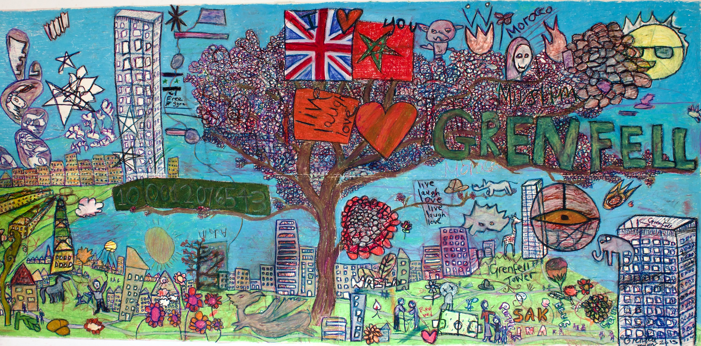

Life before the fire
Built in the 1970s, Grenfell Tower formed part of the Lancaster West housing estate in North Kensington, west London. The tower exemplified a wider urban development trend of the 1960s and 1970s, when local authorities constructed tower blocks across London to replace slum housing with affordable social housing.
By 2017, Grenfell Tower housed a remarkably diverse community. Its 129 flats were home to people of many nationalities, ethnicities and generations. Residents hailed from countries including the UK, Afghanistan, Bangladesh, Egypt, Eritrea, Iran, Lebanon, Morocco, and Syria, among others. The community spanned all age groups and life stages. Young families with children lived alongside elderly residents, some of whom had called Grenfell home for decades.
Professionally, the residents were equally varied, including artists, dressmakers, hairdressers, chefs, and architects. While some had established roots over many years, others had arrived more recently for work or educational opportunities. This blend of long-term residents and newcomers created a dynamic, multicultural community within the tower’s walls.
The neighbourhood in context
Grenfell Tower and North Kensington
A community of many cultures, languages and generations
Arabic · Somali · Spanish · Tigrinya · Amharic · Tagalog · Bengali · Portuguese · French · Albanian · Persian · Italian · Polish · Kurdish · English
Faith and belief, around the tower1
About these figures. Census figures are for the immediate Grenfell neighbourhood: Grenfell Tower, Grenfell Walk and neighbouring streets (population 1,540), not tower residents alone. Language figures cover state-school pupils living in North Kensington; the 15 languages listed include English. 1 A Journey of Recovery: Needs Assessment (2018), Table 1, 2011 Census. 2 Same report, Table 3, council schools census. 3 Grenfell Tower Inquiry, Phase 1 Report, Vol. 2, para 10.130.
A drawing that survived
In 2015–16, Constantine Gras was artist in residence at Grenfell Tower, commissioned by the Kensington and Chelsea TMO to make a mural for the refurbished ground-floor foyer. At a Fun Day in May 2015, held as respite for families living through the refurbishment, about 20 children drew whatever they liked: Grenfell Tower, animals, flowers, and symbols of Moroccan and British identity.
The drawing was so vivid that Gras used it as the finished work rather than a mural. The TMO never hung it in the tower; because it stayed in storage, it survived the fire 1.
Source: Constantine Gras, “Live, laugh, love”, blog post, June 2015, and correspondence with the artist, October 2026 1.

Read residents’ stories
Read: The 21st Floor
The BBC has created a powerful interactive resource that tells the stories of residents who lived on the upper floors of Grenfell Tower 2.
Read: The lives of Grenfell Tower
The Guardian has published portraits of all 72 people who died, drawing on memories shared by their families, friends and colleagues 3.
Pause and reflect
The BBC resource focuses on individual stories rather than statistics. What did you learn about residents’ lives that surprised you or challenged your assumptions about who lived in the tower?
Write a reflection
Notes are private to this page. Copy them before leaving.
Voices from the tower
“It was a tower block, but it was home.”
Natasha Elcock
“It was a community. A true layer-upon-layer of communities integrating and becoming just one community.”
Nick Burton
“Every floor had smells of different cuisines. And different music. Moroccan music on the top floor and then the middle layer someone listening to reggae music.”
Rabia Yahya
“The tower was one big family. Anything we asked for, people would bring it.”
Maher Khoudair
“Me and my next-door neighbour Natalie kept the doors open so children can go in and out.”
Hanan Wahabi
“It felt like my success was not only my success it was not only my family’s success but the success of the local neighbourhood”
Tiago Alves
“It’s just, it was my safest place.”
Turufat Yilma
Listen, then reflect
Grenfell: In the Words of Survivors
The following clip is from Grenfell: In the Words of Survivors, a verbatim play produced by the National Theatre. The piece draws entirely on the testimony of those who lived through the fire.
Pause and reflect
Verbatim theatre uses people’s exact words as its script. How does hearing survivors’ testimony performed in this way differ from reading a news report or watching a documentary? What might this approach offer, or risk, as a teaching resource?
Write a reflection
Notes are private to this page. Copy them before leaving.